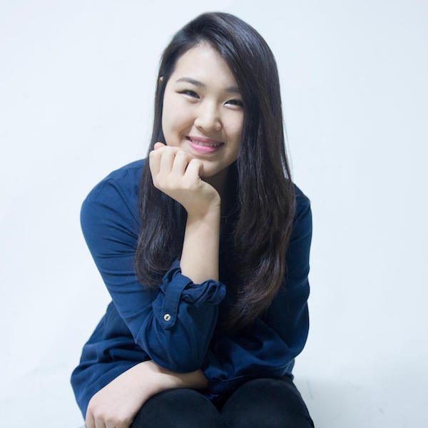

Priscilla Hwang
Journalist, World Traveller, Dessert Connoisseur
Priscilla has backpacked across the Middle East and North Africa. From Turkey to Tunisia, Iraq to Palestine/Israel, she's brought back stories of people and their lives. Her most recent trip was to the border of Syria and Lebanon where she worked as a teacher at a makeshift refugee camp. She is a self-proclaimed linguaphile, having acquired the Tunisian dialect recently. She's worked as an Arabic translator for the Ottawa Citizen following the Oct. 22 parliament shooting, conducting interviews with native Libyans.
When she's not telling stories, she plays the guitar, paints, and decorates with DIYs. She holds a Master of Journalism from Carleton and a degree in International Relations and Arabic from the University of Ottawa.
Priscilla is currently working as a journalist with CBC News. She's worked in the investigative unit, CBC North, and Toronto's digital team.
Any tips or ideas? Reach her at:
- Work -
Underground
Ottawa Citizen
Macleans
Postmedia | 1, 2
CBC | 1, 2
Rogers TV
ACF Fashion Magazine
SoundCloud
YouTube
- Awards -
RTDNF CBC Barbara Frum Award for interviewing
Diane King Stuemer Award for international policy journalism
Tim Ralfe Memorial Scholarship for political journalism
CBC Joan Donaldson Scholarship
Ontario Graduate Scholarship